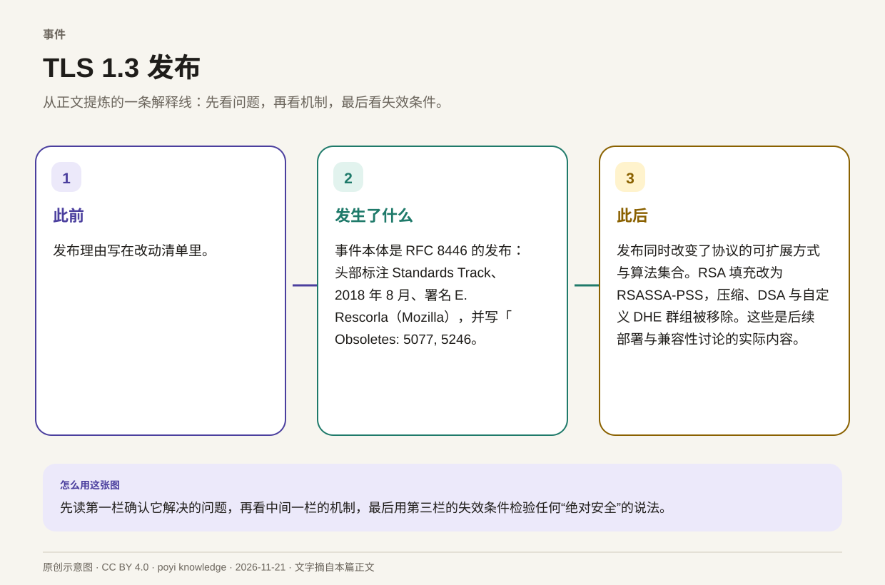
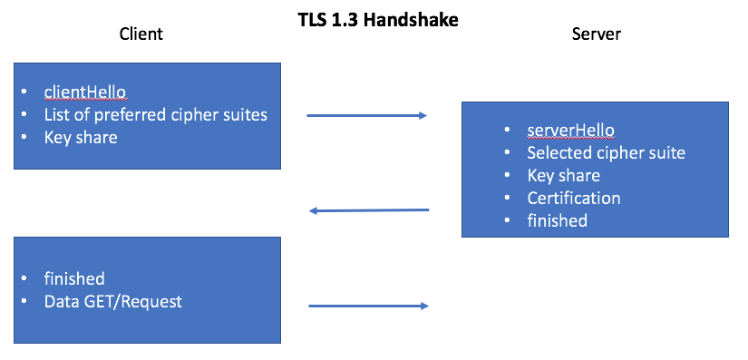

原理与机制
事件：TLS 1.3 发布（TLS 1.3 Published）。事件本体是 RFC 8446 的发布：头部标注 Standards Track、2018 年 8 月、署名 E.Rescorla（Mozilla），并写「Obsoletes: 5077, 5246, 6961」与「Updates: 5705, 6066」。§1.2 列出与 TLS 1.2 的主要功能差异，其中两条定义了新版本的骨架：对称套件被裁剪为全部 AEAD——「Those that remain are all Authenticated Encryption with Associated Data (AEAD) algorithms.」以及「All handshake messages after the ServerHello are now encrypted.」

为什么重要
发布理由写在改动清单里。§1.2：「Static RSA and Diffie-Hellman cipher suites have been removed; all public-key based key exchange mechanisms now provide forward secrecy.」把前向保密从可选变成默认。同节说明密钥派生重设计的动机是便于分析——「The new design allows easier analysis by cryptographers due to their improved key separation properties.」并以 HKDF 为底层原语。还有为中间盒兼容而保留的少量冗余：ChangeCipherSpec 的存留被说明为「except when needed for middlebox compatibility」。
应用与实例
发布同时改变了协议的可扩展方式与算法集合。§1.2 记「The TLS 1.2 version negotiation mechanism has been deprecated in favor of a version list in an extension.」即版本协商改走 supported_versions 扩展；同节记「Elliptic curve algorithms are now in the base spec, and new signature algorithms, such as EdDSA, are included.」并说明取消了点格式协商；RSA 填充改为 RSASSA-PSS，压缩、DSA 与自定义 DHE 群组被移除。这些是后续部署与兼容性讨论的实际内容。
边界与攻击面
新版本也带来新的取舍。§1.2 承认快速模式换来的是安全性质受损：「A zero round-trip time (0-RTT) mode was added, saving a round trip at connection setup for some application data, at the cost of certain security properties.」§8.2 展开这类防重放实现的一条可被利用之处：若存储键取自未校验的部分，攻击者可以在多身份 PSK 情形下改动不被校验的 binder 制造不重复——因此「The server MUST derive the storage key only from validated sections of the ClientHello.」
历史与背景
§1.2 的清单开头即写明该文档的自我定位：「The following is a list of the major functional differences between TLS 1.2 and TLS 1.3.It is not intended to be exhaustive, and there are many minor differences.」那两行头部只支撑废弃关系这一层：Obsoletes 列出 RFC 5077（会话票）、RFC 5246（TLS 1.2）、RFC 6961（多重证书状态请求），Updates 列出 RFC 5705（密钥导出）与 RFC 6066（扩展），而这段废弃清单在机制一节另有引文；套件设计的改写属于 §1.2 正文，头部没有提到记录层设计，§1.2 自己也声明该清单并不穷尽，因此清单里没有的改动不记在本文档名下。

逐步示例与核验
事件时间线模型
背景 → 过程 → 结果 → 争议。背景写此前技术/制度；过程写可核参与者与时间；结果写后续标准、机器、课程或政策；争议写二手叙述与一手材料的差距。
参考出处
- Wikipedia search entry for TLS 1.3 发布. https://zh.wikipedia.org/w/index.php?search=TLS%201.3%20%E5%8F%91%E5%B8%83
- A Brief History of Cryptology and Cryptographic Algorithms (Dooley, Springer 2013). https://link.springer.com/book/10.1007/978-3-319-01628-3